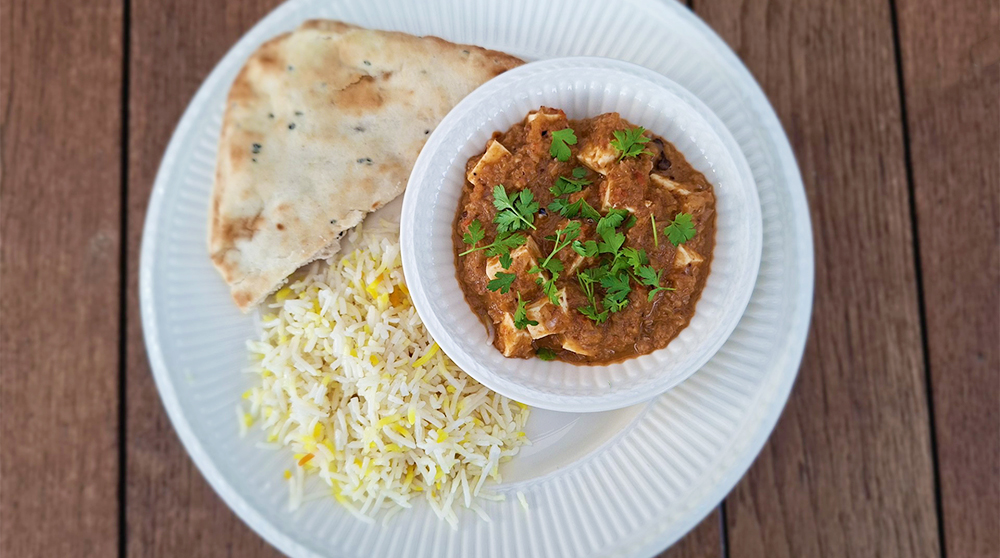

avocado salade

amerikaanse caesar salade

italiaanse caponata

falafelwrap

roze ontbijtbowl

indiase tikka masala

salade met gegrilde ananas

biefstuk chimichurri & gegrilde groenten

banh mi cat ba style

shahi paneer

Bereidingsduur: 45 minuten
Aantal personen: 4
Ingrediënten:
250 gram paneerkaas
2 uien
12 cashewnoten
1 teentje knoflook
1 theelepel gember
4 walnoten
2 tomaten
100 gram yoghurt
3 kruidnagels
2 stuks gedroogde chilipeper
1 theelepel garam masala
2 theelepels kardemom
1 theelepel kaneel
0,25 theelepels kerrie
0,5 theelepel komijn
2 handjes peterselie
naar smaak naanbrood
300 gram pilavrijst
3 eetlepels room
250 gram paneerkaas
2 uien
12 cashewnoten
1 teentje knoflook
1 theelepel gember
4 walnoten
2 tomaten
100 gram yoghurt
3 kruidnagels
2 stuks gedroogde chilipeper
1 theelepel garam masala
2 theelepels kardemom
1 theelepel kaneel
0,25 theelepels kerrie
0,5 theelepel komijn
2 handjes peterselie
naar smaak naanbrood
300 gram pilavrijst
3 eetlepels room
Instructies:
1. Snijd de tomaten, uien, de knoflook en de gember in kleine stukjes. Verhit boter in een wokpan en voeg de cashewnoten, walnoten en kardemom toe. Roer en laat dit 1 minuut op het vuur staan.
2. Voeg de uien en tomaten toe en kook tot de uien zacht zijn. Voeg eventueel wat water toe, haal uit de pan, pureer en laat afkoelen.
3. Verhit in dezelfde pan nog wat olie en voeg de komijn, kruidnagels, kaneel, gember en knoflook toe. Roer en laat dit 2 minuutjes op het vuur staan. Voeg dan de uien-notenpasta weer toe samen met de chili, garam masala en kerrie. Roer goed door en kook 3 minuutjes. Zet het vuur laag en voeg dan de yoghurt toe.
4. Roer goed en kook totdat het mengsel dik wordt. Voeg 125 ml water toe en kook tot het dikker wordt. Test hoe het smaakt en voeg eventueel meer kruiden toe. Snijd ondertussen de paneer in driehoekjes. Maak het naanbrood en de rijst klaar.
5. Wanneer het mengsel goed is, voeg je de paneerkaas toe. Kook op laag vuur 2 minuutjes. Voeg de room toe en roer. Serveer onmiddellijk. Garneer met nog meer room, zwarte peper en wat peterselie.
1. Snijd de tomaten, uien, de knoflook en de gember in kleine stukjes. Verhit boter in een wokpan en voeg de cashewnoten, walnoten en kardemom toe. Roer en laat dit 1 minuut op het vuur staan.
2. Voeg de uien en tomaten toe en kook tot de uien zacht zijn. Voeg eventueel wat water toe, haal uit de pan, pureer en laat afkoelen.
3. Verhit in dezelfde pan nog wat olie en voeg de komijn, kruidnagels, kaneel, gember en knoflook toe. Roer en laat dit 2 minuutjes op het vuur staan. Voeg dan de uien-notenpasta weer toe samen met de chili, garam masala en kerrie. Roer goed door en kook 3 minuutjes. Zet het vuur laag en voeg dan de yoghurt toe.
4. Roer goed en kook totdat het mengsel dik wordt. Voeg 125 ml water toe en kook tot het dikker wordt. Test hoe het smaakt en voeg eventueel meer kruiden toe. Snijd ondertussen de paneer in driehoekjes. Maak het naanbrood en de rijst klaar.
5. Wanneer het mengsel goed is, voeg je de paneerkaas toe. Kook op laag vuur 2 minuutjes. Voeg de room toe en roer. Serveer onmiddellijk. Garneer met nog meer room, zwarte peper en wat peterselie.